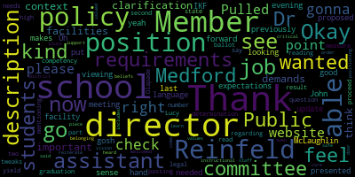
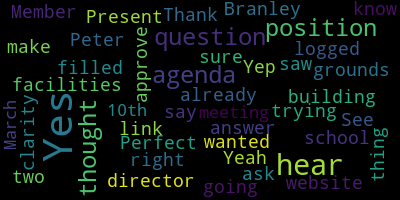
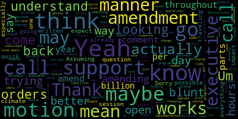
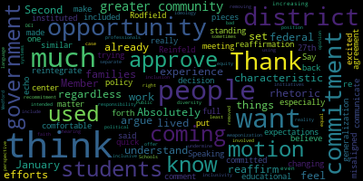

[Lungo-Koehn]: Hi. I don't see the agenda on the city website. I don't see that I don't see this posted on the city website. But can you tell me where it is on the school website. Hi, Dr. Galusi. It's not posted on the city website, this meeting, either of these meetings, which is usually where I find the agendas. Can you just direct me on the school web?
[Galusi]: I'm gonna go check it out right now, please. Okay. Thank you. Here we go. Pulled it up from the school website just now.
[Branley]: Yeah, I logged on from the school website.
[Lungo-Koehn]: Okay, but we don't post the agendas on the school website?
[Branley]: See the agenda there.
[Lungo-Koehn]: You do? I don't.
[Branley]: I was going to say, I thought I saw the agenda too, because that's where you get the link, because it's all on there.
[Lungo-Koehn]: All right. It's not pulling up either for me on my computer here, the link or the agenda.
[Graham]: I just put it in the chat. Thanks.
[Branley]: Yes, it's here.
[Lungo-Koehn]: OK, good. As long as you all can see it somewhere. Thank you.
[SPEAKER_13]: Okay, we have one, let's see.
[Lungo-Koehn]: We should be good. I think maybe just Member Reinfeld we're waiting for. So I'll just read, it is 5.32, so I'll read the agenda. The fourth regular meeting of the Medford School Committee, Wednesday, February 26th, 2025. We'll come to order. This is a remote-only meeting. Executive sessions at 530 and our regular meeting is at 6pm. Please be advised that there will be a meeting of the Medford School Committee held via remote participation only. This meeting is being recorded. The meeting can be viewed live on the Medford Public Schools YouTube channel through Medford Community Media on your local cable channel Comcast 9, 8 or 22. and Verizon 43, 45, 47. Participants can call or log in by using the following link, which is on the agenda on the school website. The meeting ID is 951-6462-1937. Member Ruseau, if you could call the roll, please. Oh, there you are.
[Ruseau]: Member Branley.
[Branley]: Present.
[Ruseau]: Member Graham. was that a present member Graham? I see your face, so. You're muted. Can you hear me here? Yes. Okay, sorry. Member Intapa. Here. Member Olapade. Here. Member Reinfeld.
[Lungo-Koehn]: Present.
[Ruseau]: Member so present, Mayor Lungo-Koehn.
[Lungo-Koehn]: Present. Seven present, zero absent. I don't believe there's any student reps on just yet. And if we all may rise to salute the flag, please.
[SPEAKER_13]: I pledge allegiance to the flag of the United States of America and to the Republic for which it stands, one nation under God, indivisible, with liberty and justice for all.
[Lungo-Koehn]: Thank you. And we have executive session in a motion to enter into executive session pursuant to General Laws 30A. Section 21A3, the Medford School Committee will convene an executive session to discuss strategy with respect to litigation, with respect to CODIS versus Medford Public Schools. The Medford School Committee will convene public session immediately following the conclusion of the executive session at approximately 6 p.m. Is there a motion to go into executive session? Motion to go into executive session. By Member Branley, seconded by? Second. member Graham roll call, please.
[Ruseau]: Never Branley. Yes. Member Graham.
[Lungo-Koehn]: Yes.
[Ruseau]: Member and Tapa. Well, it's coming in again. I'll come back. Remember all the potting? Yes. Remember her right job?
[Lungo-Koehn]: Yes.
[Ruseau]: Member. So yes, Maryland go current.
[Lungo-Koehn]: Yes.
[Ruseau]: Member Tapa.
[Intoppa]: Assuming this is a motion to go into executive session. Sorry.
[Lungo-Koehn]: Yes. Great. Seven in the affirmative, zero in the negative. We are going to go into executive session and we're going to bring attorney Austin with us.
[Unidentified]: Thank you. Hey, everybody. We're back.
[Lungo-Koehn]: Dr. Cushing, any student reps? And then we're going to just start recording.
[Peter Cushing]: I apologize, we do not have student reps at this moment.
[Lungo-Koehn]: Okay, thank you. And it looks like we are recording, so I'll just continue. Thank you. We have our consent agenda, approval of bills and payrolls, approval of capital purchases, approval of grants, approval of field trips, approval of meeting minutes. And those are the regular meeting minutes from February 10th, 2025. Is there a motion on the floor for approval? Motion to approve. By member Bramley, seconded by member Olapade. Roll call, please.
[Ruseau]: Member Bramley.
[Branley]: Yes.
[Ruseau]: Member Graham.
[Branley]: Yes.
[Ruseau]: Member Ntuk. Yes. Member Olapade. Yes. Member Reinfeld.
[Lungo-Koehn]: Yes.
[Ruseau]: Member Ruseau. Yes. Mayor Lungo-Koehn.
[Lungo-Koehn]: Yes. Seven in the affirmative, zero in the negative. consent agenda is approved. We do not have any reports of subcommittees. We do have three reports of our superintendent. The first is the International Travel and Exchange. I'm going to turn it over to Dr. Peter Cushing, assistant superintendent, and Ms. Vilma Baudot. Oh, I pronounced that wrong, Baudot. Director of World Language, sorry about that.
[Peter Cushing]: Good evening, Madam Mayor, members of the school committee. Thank you very much for this opportunity for us to speak to you this evening on what we're looking at as an upgraded opportunity for our students to be truly immersed in our world languages program at Medford High School and within the Medford public schools. Myself and Dr. Bebo will be presenting to you this evening on this tremendous opportunity. So benefits of an exchange program really gives students a true better understanding of different cultural and community perspectives and also gives students an opportunity for a increased interest in global issues. A true exchange program also provides students an opportunity to be immersed in their experience with their host families but to also not simply be voyeurs as they travel through a country and briefly engage with the experiences. Dr. Beveau, would you like to add anything at this time?
[Vilma Bibeau]: Good evening, everyone. Thank you for having us tonight. My personal experience with the exchange program in another district has been that, besides the tremendous opportunity that kids have while traveling to another country and make friends, but then creating those lifelong relationships with those students. The students come back, so they have the opportunity, or vice versa, they have the opportunity to see those students and to visit each other's countries and families and interact with each other. It's a beautiful opportunity because they built something beyond what a normal trip will give, and they really immerse themselves to the language and the culture of the country that they're visiting. If you allow me, I can explain a little bit more of how this came about. We were approached by a school in Italy, in a Veneto area, northeast of Italy, near Venice. The school as they provide us with all the benefits and the structure that the school is that they have to offer is a nice school, just like ours, a little smaller. They have traveled to the United States before. In fact, I believe they have a trip scheduled now to Chicago. and they would like to come to Massachusetts. They have been in Massachusetts before, hosted by another district. But the district that were hosted before, they did not want to go back to Venice, so they approached us. Lovely people. I have communicated with the teachers several times, and they would like to come to visit us in October, next October, 2025. and we will go then visit them in April 2026. The dates are still to be determined because we want to make sure that everybody's on board. Them, just like us, they need to propose this to their school committee and they need to approve the dates. In the meantime, we are busy organizing what this exchange can look like. Now, in terms of Medford, this will be a pilot program. We are planning to try this and see how this goes with a small group of 10 to 15 students. but the group that is coming from Italy will be more or less the same amount. We're talking about 15, maximum 17 students, again, high school students. This means that these students will be hosted by our family, our community. So our next step will be if this pilot program will be approved, the next step will be to involve the community and see who would like to host students and teachers, two teachers from Italy and two teachers, possibly a third chaperone going to Italy from Medford going to Italy. Once we have the interested parties, we will have conversation meetings with the families, what to expect. We will have a conversation with the travel agency. Before we embarked in this beautiful initiative, we consulted with local schools district, they have already years of experience with exchange programs. And we were, between all the recommendations that we got, we were recommended to contact Promotor. Promotor seems to be an agency, a travel agency, who has a steady program in terms of dealing with exchange programs. And in fact, we immediately contact them. They've been very responsive and they already provided us with a package of what our exchange program will look like. If I have a few more minutes, I can briefly tell you how this is going to look. For Medford, so when we go, we're talking about 10 days during April vacation, 2026, and we will arrive to Venice from Venice. We'll go to the school in near Venice. We'll take the train to go to Mugliano. We'll be welcomed there and we'll meet students, faculty, and families. Then the students will go to their respective families together with the teachers, teachers as well. And then we will spend, within these 10 days, we will spend five, six days in the school. exchanging with a school program and etc. We're going to be in their schools, in their school, and the other days we'll be traveling to Milano, Milan, Venice, of course, and Verona, and I'm missing something, Venice, Verona, Milano, and I thought I had something else. but those are the, or perhaps Treviso. These are all local cities, surrounding cities. The promotor will guide us, will have a guide, will take us to these places, will visit museums, local historical places, and we will provide children with our kids with a meal, a lunch, and then this will be one-day trips, and we'll return to Mogliano that evening, and kids will go back to their respective families. Then when we'll do another city, we'll repeat the same thing. I'm going to pause for a second. Dr. Cushing, I know there's probably so much curiosity. We're still in the beginning of organizing this, of brainstorming, so there's still so much work to be done, but I would, if you have any questions, Of course, the travel includes an insurance, cancellation insurance. If students need to come back over here for a medical reason, the packet includes all of this. Meals, transportation, meals, all of it. Dr. Cushing?
[Peter Cushing]: So we are also just so the committee is aware because this has been an issue previously, we are offering for $52 included in the overall price, it cancel at any time policy up to 48 hours prior to departure. So our families will have that opportunity, and I believe it's $52.25. This is a really great opportunity. The students, as Dr. Bebo mentioned, will be visiting us in October. Exact dates yet to be determined, and we expect 17 students to visit with their Medford High School host families during that time. So, and then in April 15th, 2025, I'm sorry, April 15th to the 25th of 2026, so just about 14 months away, we will depart in a pilot with a very small group, 15 students, to stay with Italian host families and to participate in their school and cultural experiences. This is a program that is brand new to Medford and something that we're very excited to take the opportunity to try. So academic requirements requiring a 90 commutative average in world language classes, overall 83 semester average. No suspensions, academic dishonesty, or pattern of inappropriate behavior. Attendance and participation in orientation meetings leading up to this for both the host families as well as our students who will be living with the Italian host families. And then a journaling of their observations from the trip. Are there any questions? I'll stop the share briefly, but to see if there are any questions from the committee at this time.
[Lungo-Koehn]: Thank you both very much for the good presentation. Sounds like a great opportunity. Are there any questions from the chair? Is there a motion for approval?
[Olapade]: I'll make a motion to approve. I'm really excited.
[Lungo-Koehn]: I'll second. Motion for approval by member Olapade. Second by Member Bramley. Before I call the roll, Member Cabra, do you have any questions?
[Intoppa]: Yeah, just one quick question. Just looking at the climate and especially with traveling and, you know, everything that's going on, do we expect that any possible executive orders or any of the already written executive orders may have an impact on the implementation of this program, just so that we're aware and we understand any risks that may come with it?
[Peter Cushing]: Thank you, Member Intapa. At this time, and obviously there have been a host of executive orders, nothing at this time leads us to believe that there will be any impact on our travel to Italy or Italian students attending school here for the two weeks.
[Intoppa]: Thank you. Just wanted to just double check on that. Obviously it's ever changing, but for the time being, before we vote, I just want to know. So appreciate it.
[Lungo-Koehn]: Great, thank you for the questions. Member Ruseau, if you could call the roll.
[Ruseau]: All right, Member Bramley.
[Lungo-Koehn]: Sorry, I had a question.
[Reinfeld]: Sorry, Member Reinfeld. Yeah, I think my hand is the same color as my wall. I'm curious what happens if demand exceeds supply on this one. This is super exciting, and I think a lot of people will be interested. I think there are some really real financial challenges for equity. what's the protocol?
[Vilma Bibeau]: I can take that. So in terms of if it becomes, you mean if it becomes very popular and more kids?
[Reinfeld]: If more people want to do this then there is room for it. Do you have to be a host family to be an exchange family or just for your student to go? Is that
[Vilma Bibeau]: So if I'm understanding your question. So, first of all, the, no, the Oosting family doesn't necessarily need to go to Italy to Oost. Ideally, that will be the real exchange. So my daughter would host with my daughter going to Medford, for example, and then my daughter will go to Italy. That will be the real exchange, the real meaning of the exchange. But of course, if that doesn't align, it will be okay. As long as it's okay with the family, it's okay. Then if I understood your question, I think you also had a financial question. Dr. Cushing and I are working to also get some, to look into some scholarships to help these students. The prices of this trip is very far more economical.
[Reinfeld]: I mean, it is a very competitive price from what I've seen of Europe, but it is still
[Vilma Bibeau]: Yes, but it's still, of course, it's hefty. Every trip is hefty. We're already looking into scholarship to try to, in fact, actually, I'm anticipating something. There's something coming later that Mr. Cushing is going to present that I already asked if that could be part of this program, could be included as part of this program. a recent fund that we just received. So we'll be looking on that too. I hope I answered your question.
[Reinfeld]: And then I was just wondering if what if more people want to go than there are more than 15 students.
[Peter Cushing]: So for this trip, for this trip, we will be having to have a hard cap as this is our first time. And we really want to make sure that students that we really want to make sure that we as an organization, this is a significant shift in our travel practices. And we really want to make sure that as an organization, we do this well. And we understand that, you know, how our students are operating within other families homes. And so in speaking with Dr. Bebeau, we just want to be cautious on this first one before we launch, hopefully what will in the future be a significantly larger group. So I think that we may have some families who are disappointed, but I think what our, not I think, I know that our plan is to start with seniors, and then work down through the world languages so that there'll be opportunities in the future. And hopefully this becomes an annual experience, not just for Italy, but for other opportunities, other nations.
[Reinfeld]: That age prioritization was, I think, what I was getting at. Thank you.
[Lungo-Koehn]: No further questions? Roll call, please.
[Ruseau]: Bever Bradley. Yes. Member Graham. Yes. Member Ntaba. Yes. Member Olapade. Yes. Member Reinfeld. Yes. Member Ruseau. Yes. Mayor Lungo-Koehn.
[Lungo-Koehn]: Yes. Seven in the affirmative, zero in the negative. Motion is approved. Thank you, Ms. Bebeau and Dr. Cushing for the presentation.
[Vilma Bibeau]: Thank you so much.
[Lungo-Koehn]: We have job description for facilities, director and assistant director, Dr. Peter Cushing, assistant superintendent of schools.
[Peter Cushing]: Hello again. I do want to apologize. I missed the window to hand my daughter Mackenzie off, so she's joining me right now. I apologize. She's being much louder than I anticipated. So the job descriptions, one of the things that we've been doing over the last several years is updating and reviewing our job descriptions with the supplemental budget thanks to the approval of the overrides in Medford. We have added an assistant facilities director. In order to hire that position, we needed to create a new job description. I will screen share that with the committee right now and take any feedback or comments you may have.
[Branley]: Member Branley? So I have a question. So do we already have the facilities director, the position filled? Can you hear me or can I just not hear Peter? We can hear you and the answer is yes.
[Peter Cushing]: Yes, I apologize. I didn't know if I was muted or unmuted. Yes, the position is filled right now, but the job description has not been updated and I don't know how long it's not dated. and what we did was we took a look for both of these at a significant number, about 12 districts in all honesty, to really compile the expectations around these job descriptions. I believe the first one on the agenda is actually the assistant facilities director.
[Galusi]: Am I able to have like a point of clarification?
[Peter Cushing]: Absolutely.
[Galusi]: I think it's important for the context of having the job description for an assistant facilities director to see the job description for the director position. And then we're able to see what the demands and the expectations and the requirements are for the director position when we're looking and viewing what's needed for an assistant director position. if that makes sense. Okay, so who is the facility's director? John McLaughlin.
[Branley]: All right, that's what I thought. And then I'm like, no, he's building in grounds. And I'm like, is that the same thing? Because I didn't know if we were trying to approve two positions. So I just wanted to make sure for clarity that I was on the same... Yep, you are.
[Peter Cushing]: Member Bramley, the language is updated to really recognize how the field has changed.
[Branley]: Perfect. Thank you.
[Lungo-Koehn]: Member Graham.
[Graham]: Just another small clarification before Dr. Cushing dives in here. The school committee is required to approve all job descriptions and we have not had a wonderful history of doing that work. So part of This is to get back on track around making sure that there are controls in place about our job descriptions. So, I know that the job for the facilities director has been filled for quite some time, but I would also bet money that at that time, the job description didn't come before the school committee because that wasn't part of the typical pathway at that time. So I think we're going to approve both tonight or amend and approve. And I agree, I think it's really important to know how these two positions are supposed to work together. And I do have a couple of questions once Dr. Cushing goes through this one, whenever you're ready, Mayor.
[Lungo-Koehn]: Yes, thank you. Member Graham, I was just putting in the chat, is there any chance, Dr. Cushing, you could increase the font size just so especially the recording grabs it?
[Peter Cushing]: That's just give me one second here.
[Graham]: How did it come up so tiny?
[Peter Cushing]: So I think it's because I have a rather large monitor at home instead of two monitors. So let me just try to do that. Actually.
[Ruseau]: No rush. Peter, can you just, yeah.
[Peter Cushing]: Is that better or would it be better if I stop share and someone else shares given a little bit bigger. Okay.
[Unidentified]: There you go. Yeah, perfect. Okay.
[Peter Cushing]: All right. So as the as the community moves forward facilities director definitely altering the name but trying to understand what is going on in the industry and what our school. really needs as we look for this position. That's not to say the Building and Ground Director is outdated, but just want to make this a more contemporary piece. Look at FLSA, which is the Fair Labor Standards Act, if I'm correct, and 260 days with flexible hours of supervision of various shifts. reports to the assistant superintendent for enrichment, innovation and operations. Job description has been reviewed and approved. As you can see, I'm not going to read everything verbatim. The next part I do want to really go through, though, and make sure in summary that the facilities director is responsible as a management level position for eight schools across seven buildings comprising approximately 1.2 million square feet of academic science lab, athletic and performing arts space. And it's responsible for maintaining the best possible conditions for all staff and students. These spaces and their condition are critical to the academic and extracurricular success of our state admission. So I want to be very clear about that, is that as I work through these job descriptions, they aren't standing alone as managing space. They're standing in concert with making sure that our academic and extracurricular environment has what it needs so that we can produce the best out it the best stated outcomes for our students and be a flagship district for the Commonwealth. So the facilities director is directly responsible for the following staff members are maintenance staff and administrative assistant. And Assistant Facilities Director, which is listed as tentative right now, simply because the other has not been approved. Facilities Director is responsible for the indirect supervision of the following staff members, and that's our custodial crew. And they are under the direct supervision in the Assistant Facilities Director position. The facilities director is responsible for developing both short and long-term practices for preventative, corrective, and predictive maintenance, and the facilities director needs to identify innovative ways in which the department can improve functionality and will utilize existing district systems and strong organizational skills to assign work to staff members. qualifications in researching this, a minimum of possessing a bachelor's degree from an accredited four-year college or university in one of the following fields, facilities management, civil engineering, construction management, or a closely related field. However, in working with our owners project managers and other engineering firms, well specifically B2Q on the HVAC process, Master's degree would definitely be preferred as we move forward with complex building systems, especially thinking about the potential of an updated or new Medford High School that will come through a feasibility study. Prior experience working with MSBA would be preferred. This is not just for the immediate situation, but for statements of interest moving forward in years in the future. a minimum of five years related experience with two years supervising staff, experience analyzing problems, budgeting, developing action plans, knowledge of practices related to fiscal management, and to make sure that we have a working knowledge of OSHA, EPA requirements, as well as the Massachusetts Building Codes, and an ability to work collaboratively, to be on call. Member Graham was able to offer a comment on that, um, and to be able to really make sure that they are available as situations present themselves, which in 1.2 million square feet of office space, I'm sorry of academic and extracurricular spaces happens frequently. Um, And the essential functions are to oversee and direct the daily operations of the facilities department, lead departmental personnel in collaboration with principals. Once again, bringing it back to that academic focus and include the providing annual professional development and training where members establish a vision of, um, vision for the department that provides functionality in existing facilities. Manage annual service contract processes, which we're really looking at preventative maintenance in this area, but also cleaning contracts. Review and approve all invoices upon verification that the work has been completed. Develop and execute an annual departmental budget. Review plan specifications permitting cost estimates for district projects. Confirm all district systems are adequately and properly maintained. And so providing examples here. Ensure district landscaping facilities are well maintained, presentable and available to students, athletes and residents in an environmentally conscious manner. Build and administer an equipment and vehicle plan that includes acquisition, maintenance and replacement. Mackenzie and establish a weather mitigation plan to really look at the we put it forward a heat protocol to this committee to make sure that that is inclusive of snow and advice to the superintendent of schools as needed. maintain strong working relationships with city department heads and vendors, participate in the collective bargaining process, and administer all contracts involving facilities department staff, assist in the, that is, believe it or not, that staff represents three separate bargaining units, assist in the negotiation and implementation of district facility leases with renters of all our facilities, engage with students, staff, school committee, board, and general public, in a manner that is professionally engaging and responsive to the suggestions in these that are presented, and to create an energy management plan that reduces reliance on fossil fuels. And then the physical requirements are pro forma around lifting 50 pounds, available to move freely within schools, offices and all district spaces, ability to flex hours to support the needs of the district as situations arise. And then additional requirements, attend school committee meetings when requested, manages the AHERA plan, which is our asbestos maintenance plan, integrated pest management, elaborating on district safety plan, and all permits for work through the Medford Building Inspector, and perform additional duties as assigned by the assistant superintendent.
[Lungo-Koehn]: Thank you, Dr. Cushing. Are there any questions or comments or amendments or adjustments or motions? Member Ruseau?
[Ruseau]: First of all, I think we should have a new rule that you should have to have a baby or a toddler on your lap for any meeting where we discuss something like this. It's pretty dry. But in all seriousness, in keeping with what Vice Chair Graham mentioned, I've been working on policy formats and all this other stuff, and I just realized that we probably should have a similar kind of section on job descriptions so that we know in the future when the job description was approved or amended. So I don't feel like I have anything to actually add to it, but if the committee is fine, I will just draft something to be added to those that would be very similar to our policy format that we've been using. It doesn't need to be a motion unless somebody just thinks that's a bad idea for some reason.
[Graham]: Member Graham. Thank you, so I did. Pop a couple of changes into the document that you saw in red line, but the 1 I wanted to call out was this the bullet under. Under 1st, section qualifications, or it should be available in an on call manner 24 hours per day. I. My fear is that nobody will want this job. So my suggestion is that we instead say be available to promptly address planned and unplanned needs across school property. I'm just going to pop that in the chat if everyone is okay with that. I think that's probably slightly better language. And, uh, I'm just looking to see if there were any other, um, questions or comments. Um, I had, I did have a comment also under essential functions where we say, um, manage the annual service contract process. Um, I know that we are trying to implement service contract, like preventative maintenance service contracts that will be managed by this team, but we also have a contract cleaning service and my suggestion, um, It is for Dr. Cushing to separate those two things out so they are different line items because they're completely different kinds of work, in my opinion. Managing a contract cleaner, I know there's a contracting piece of that, but that's about day-to-day, daily, nightly performance. of the contract cleaner versus like the monthly pest control folks or, or whatever those other, um, maintenance contracts will be. So those would be my two suggestions. Um, and I'd be happy to make a motion to approve as amended unless there are other questions. Yeah.
[Intoppa]: Thank you. I don't really see any, uh, distinctions at the moment that I would change, although I would. Um, with respect to vice chair Graham push a little bit back on the on call manner, because as someone who has served in on call capacities before, I feel like being pretty blunt about the demand is almost better to, like, have it outright. Like, I understand the appeal and trying to make sure that it's phrased in a way. But, um, I think something about, you know, just general on call support. Maybe, maybe, maybe don't say 24 hours a day, because that I mean, it's kind of just implied with the phrase on call support. But I think being very, very blunt with that maybe, in my opinion, I think is a better course.
[Lungo-Koehn]: So would you like to sever that amendment?
[Intoppa]: Yeah, if we could sever that amendment, that'd be great. I mean, I mean, I'm also I'm also open to amending the amendment and just saying, to just be available in an on call support manner throughout the year. as opposed to in an on-call manner, 24 hours a day throughout the year.
[Lungo-Koehn]: Amber Graham, thoughts? Somewhere in the middle maybe might work.
[Graham]: I think we're sort of splitting hairs here. This is a management level position and people applying for these kinds of positions understand that they are expected to be available. So what if we said be available for on-call support and to promptly address planned and unplanned needs. I just am trying to get away from 24 hours a day, seven days a week language. That's the part that, like, if I was reading that as an applicant, what I would be worried about is how many people work for this place? Am I going to be called to do every last little thing that goes wrong? Like, there's a lot of variability in there. So I feel like maybe if we merge the two together, we'll get to the spirit of that.
[Intoppa]: Yeah, no, that works for me. I think that's what I'm trying to imply. I think I was just held up on using the on-call support language and keeping that consistent. But yeah, no, that works for me. It works for you.
[Graham]: Putting it in the chat.
[Lungo-Koehn]: OK, motion for approval of my memogram as amended and then adjusted with another amendment.
[Galusi]: Member Reinfeld has her hand up again. Oh, gosh, yeah.
[Lungo-Koehn]: Member Reinfeld, sorry. It does blend in with your background.
[Reinfeld]: Maybe I'll switch to the default yellow instead of my accurate skin tone. Could you clarify what the role is in terms of special projects? I know there's mention of maintaining the capital plan and relationships with vendors, but when we approved the assistance facilities director as part of the override allocation. Part of the motivation for that was we knew that the district was going to be entering into a number of special projects, not just the new high school, but with the capital plan that we have approved as a committee, we know there are going to be select projects. You mentioned HVAC, but we know that's not the only one. We know there are things coming up and I would, maybe it's a bullet point just on special projects, but I wasn't sure exactly is it the facilities manager, is it the assistant facilities manager who's going to be serving as the liaison to the vendor, the OPM, the project manager. I think if that is an explicit responsibility of being the point of contact or the team lead within the district for these new construction projects, these big maintenance projects, not just ongoing maintenance, I think that needs to be called out more clearly in one or both of the job descriptions. And I wasn't quite sure which one that was landing on.
[Lungo-Koehn]: Good thoughts, thank you. Member Reinfeld, so is that a motion to amend
[Reinfeld]: into which job description should a bullet point?
[Lungo-Koehn]: Definitely in the new one, I would believe.
[Reinfeld]: Or both. Yeah, are they both? Is it at the discretion of the facilities director to delegate that to an assistant facilities person? I know there was a vision. I'm not sure. I'd like to see that reflected in one or both of these descriptions.
[Lungo-Koehn]: Okay, I agree. Member Graham?
[Graham]: Yeah, the facilities director is our liaison for MSBA today, and I would expect that that would continue to be true, particularly because the facilities director in this, like, two-prong process, the facilities director has responsibility over the maintenance staff directly versus the custodial staff will sit with the assistant director. So I do think, like, that special projects piece belongs in the facilities director, and I would also say just as a matter of like good form for job descriptions, it would also say other job-related responsibilities as assigned so that it's clear that this is not like a finite list of what could happen in the job as time goes on. So I would be happy to add those two amendments.
[Lungo-Koehn]: Thank you. Motion for approval as amended by, is there a motion for approval?
[Graham]: Motion to approve.
[Lungo-Koehn]: Member Graham, as amended, seconded by?
[Graham]: Second.
[Lungo-Koehn]: Member Intoppa. Roll call, please.
[Ruseau]: Member Branley.
[Graham]: Yes.
[Ruseau]: Member Graham.
[Graham]: Yes.
[Ruseau]: Member Intoppa. Yes. Member Olipate. Yes. Member Reinfeld.
[Lungo-Koehn]: Yes.
[Ruseau]: Member Rossell. Yes. Mayor Lungo-Koehn.
[Lungo-Koehn]: Yes. Seven in the affirmative, zero in the negative. Motion passes as amended. If there's no other amendments to either job description, I'll go on to number three. vocational presentation to adjust for MSBA, Dr. Peter Cushing, assistant superintendent, and Mr. Chad Fallon, director, principal of Medford Vocational Technical High School. Welcome.
[Peter Cushing]: I just want to interject. Did we, were just both approved or was just one? That's, I just wanted to follow up on that.
[Graham]: I thought I was, I was just going to be my responsibility director.
[Peter Cushing]: Okay, so let's back up, sorry. It's okay, my apologies.
[Lungo-Koehn]: Okay, so is there a motion for approval or any questions or amendments to the assistant facilities director position?
[SPEAKER_13]: Member Graham.
[Graham]: I had a couple of suggestions on this one as well. In the section, sorry, I'm just looking for it. In the essential functions section, there's a bullet about halfway down this is assist in the construction of weather mitigation plans, including snow and ice operations that account for equipment personnel training and materials. And I think the word. I think it would be assist in the development of a weather mitigation plan. And then I would also suggest that there be another sentence added to that that says, like. Something about. enacting the weather mitigation plans as appropriate, like, when needed, right? So it's 1 thing to have an overarching plan that says this is how we're going to handle these events. And then when events happen, we have to actually do the thing that we put in the plan. So I would just clarify that. The other change is the same language about the 24-7 language, which Dr. Cushing may have already gotten.
[Intoppa]: I did.
[Graham]: Okay, thank you. And that was it. I'm happy to make a motion to approve unless my colleagues have other questions.
[Lungo-Koehn]: Motion for approval. Member Reinfeld.
[Reinfeld]: Is this another other duties as assigned needed here? Yes. We know that this is going to grow or evolve, maybe not.
[Peter Cushing]: Just I do have that under additional requirements. Perhaps it would be best if we merge additional requirements just in, but it is perform additional duties as assigned by the facilities director. So what I did in this was I took the direct reporting responsibility away from my current title and moved it to be nested under the facilities director.
[Reinfeld]: And then assist with collective bargaining and administer all contracts involving the facilities department staff. Is it really just the custodians versus?
[Peter Cushing]: So it could be.
[Reinfeld]: If this person is responsible for the custodians and not other management, I'm not sure it's appropriate to be administering contracts not related to custodial. You tell me how that works.
[Peter Cushing]: So I think this would be more of a team approach for all the collective bargaining and would want to make sure that the person, whoever is the successful candidate would have the opportunity to observe and grow and contribute to.
[Reinfeld]: So maybe it's assist with collective bargaining and administration of all contracts of rather than the administer verb. I know this is. a little bit semantic, but this person is not responsible for fully to administer it, to assist and administer. They're assisting with the bargaining and administration.
[Peter Cushing]: Yep.
[Lungo-Koehn]: Just if I... Dr. Cushing, did you just... Yes. Oh, are you all set? Okay, you're working on it. And then we're gonna go to member Rousseau, then member Graham.
[Ruseau]: Thank you. I just want to implore my dear colleagues to have written up language when you want to change stuff. It's really hard to write amendments to a full document. I can't write the whole document over into the minutes. I know that it's how this is, I do this too myself. I'm not scolding anyone, but trying to figure out how to write this so that it can actually become part of the minutes is a very big challenge. So do you have thoughts on a sentence? What's the new sentence look like? Would be greatly appreciated. Thank you.
[Lungo-Koehn]: Thank you, Member Rizzo. Member Graham?
[Graham]: I'm happy to make a motion to approve if there are no other comments.
[Lungo-Koehn]: Motion to approve by Member Graham as amended, seconded by?
[Olapade]: Second.
[Lungo-Koehn]: Member Olapade? Roll call, please.
[Ruseau]: Member Branley?
[Graham]: Yes.
[Ruseau]: Member Graham?
[Graham]: Yes.
[Ruseau]: Member Intoppa? Yes. Member Olapade? Yes. Member Reinfeld?
[Lungo-Koehn]: Yes.
[Ruseau]: Member Ruseau? Yes. Mayor Lungo-Koehn?
[Lungo-Koehn]: Yes. Seven in the affirmative, zero in the negative. Paper passes. We do not have any presentations of the public. Under continued business, we have second meeting member Graham. We have to do number three. Oh, we missed a question. Vocational presentation to adjust for MSBA. Dr. Peter Cushing, assistant superintendent of schools. And Mr. Chad Fallon, that's right. Sorry about that. It's been a long week. Director of Medford Vocational Technical High School. I already read that. Thank you.
[Peter Cushing]: Good evening, Madam Mayor, members of the committee once again. So what we wanted to do was take a moment here today to simply update you. Much of this slide deck will not be presented tonight. But I wanted to take a moment to have Director Fallon speak on this slide and the next slide as we also discuss the approvals that were made and voted into record on May 20th of 2024. for expanding the CTE programs at Medford High School and asking and requesting of the committee, and I'll get into it later, but a vote to actually reduce that from five programs to four based on conversations we've had. But at this time I'd like to hand it over for these next two slides for Director Fallon.
[Fallon]: Good evening. I wanted to provide an update. Last time we met about MSBA, we didn't have the 24-25 school year placement data. And we do now. I wanted to give a quick update. We're in a much better place as far as a wait list goes than we were in previous years. And this is due in part to the additional teaching staff in three of our programs due to the override. We were able to increase seats by about five to six students in each of those programs. So we have a total of 18 students right now that are on a wait list. Those 18 students haven't received any choice of our CareerTech programs. There's several students that are on waitlists for additional programs or maybe students that didn't get their first and second choice. But right now, the waitlist stands at 18. So as we look at new programs in the future for the new building, we do believe that we're going to really be able to close this gap and not have any students on a waitlist so that every student at least gets a program of their choice, whether it be their first, second or third. For this year, we had 271 students complete the CTE exploratory. 200 of them were placed. You can see the difference from last year to this year. As I said, 18 have been waitlisted and 53 of those students chose a traditional high school pathway. Next year, we're going to be going to a model that all freshmen will be able to participate in Freshman Exploratory, which will include an art rotation, a music rotation, and a technology rotation. And then we're also going to build in a freshman seminar rotation into that plan.
[Peter Cushing]: Thank you, Director Fallon. So our current program, as the committee is well aware, is 15 Massachusetts Byron Elementary and Secondary Education, Chapter 74, Approved Career and Technical Education. vocational programs. We are trying to make sure that everyone moves away from, you know, VOC and really thinks about career technical education or CTE. And five programs currently approved by the Medford School Committee referencing that May 20th vote that I mentioned earlier. So the approved new programming that can launch in the current facility and does not require new space. All right, our IT networking that we will look to go through the DESE application submission next school year. um and the uh launch the exploratory in 26 and 27 and then criminal justice which is a which is a narrow title for a very expansive field um but looking for destiny destiny application submission more than likely in all honesty for us to start this work next year as well um i want to make sure that everything is tied tightly to the MSBA feasibility process, and we don't miss a window because a program has not been approved by DESE. So criminal justice, hopefully to launch the exploratory in the 27-28 school year. as you see there. Proven new programming that the committee approved last year. However, this is really connected to the MSBA process and would require new space. We do not have the space available at this time to open these shops or to run these exploratories. And so those would be dental assisting and plumbing. and looking at DESE application work to commence next year as well, hopefully again to align with that feasibility work. What we are here tonight really, though, to ask for is the approval of one of the approved new programs, and that's veterinary science. We had a conversation, and as you see here, school committee approved May 2024. We, as MPS leadership, are seeking to remove it at this time based on further conversations and investigation. Director Fallon, feel free to jump in at any point. But as part of our eligibility phase, we met with DESE regarding proposed expansion plans for Chapter 74 programs. And DESE highlighted the significant commitments to launch this program. District and school leadership is again seeking a vote of the school committee to remove veterinary science from our Chapter 74 submission form. And Director Fallon, would you like to speak about the rationale for removal as is bulleted on the screen?
[Fallon]: So in speaking with other schools, and as Dr. Cushing said, speaking with the Department of Education directly, there is more to this program than just the day-to-day operations. There's a significant upkeep requirement. You need to have 24-hour care for the animals that you have in your care. There's additional certifications. We almost feel like the agricultural schools really do a good job at this because they have the space and they have the ability to do this, we just are thinking that based on the information we received and all of these factors, probably is not the best move for Medford at this time.
[Peter Cushing]: And so the remainder of the slide deck has been basically maintained from May 2024 for new programs and updating. I do not see the need, unless the committee feels it is necessary, to go through that presentation, the remainder of the presentation at this time, as what we're seeking is the removal of veterinary science.
[Unidentified]: Member Graham?
[Lungo-Koehn]: While you're on mute.
[Graham]: Hi, I just wanted to thank Mr. Fallon and Dr. Cushing and Dr. Glusi for hopping on the phone with Jesse. It's a pretty standard part of the MSBA process where, because we had chapter 74 programs, and we were talking about expansion. MSBA passes our paperwork essentially over to DESE and then it's pretty standard part of the process where they meet and say, what are you thinking? What's happening? What happens next? That kind of thing. So that's where this conversation happened. So it's a pretty routine part of the process. We will need to take a vote tonight so that I can pass that back to MSBA. And the Chapter 74 form can be updated, which Dr. Cushing and I will handle. But I just wanted to say, like, I think this is exactly what the process is supposed to do. It's supposed to say, like, explore, think about the things that you want to know more about. And then, you know, you sort of triangulate it and fine-tune. I have a sister who is a vet, and I was like, oh, veterinary science sounds like a thing that could happen without lots and lots of animals at this stage, like in these early stages. And then when we talked to Desi, they were like, no, no, you need to have animals. And it's like, OK, that's really not where we're at right now. At any rate, the process was very smooth, DESI was very collaborative, they were excited about the other expansions that we talked about and I have a motion when people are done with their questions.
[Lungo-Koehn]: Great, thank you member Graham. Member Ruseau?
[Ruseau]: My question is, what is their specific language that program through that in the last minute.
[Graham]: So I did, I did. And I will put it in the chat. Oh, that's not the right language. Let's see. The motion is to remove veterinary science from exploration and adjust the expansion timelines for dental assisting criminal justice, protective services, plumbing, HVAC and information systems per the presentation. So I just put that in the chat. And so there's, so basically because we sent this initial presentation to MSBA, we will have to make, send them the update and be able to clarify for them what changes happened. And this motion will do that.
[Lungo-Koehn]: Okay, thank you, Member Graham. I'm personally bummed about the veterinary program. I think it would have been great for our students. I know there's always a wait list for Essex Tech, but completely understand that it's unfeasible. I'm glad we learned that now before we got anybody's hopes up. Motion by Member Graham, seconded by... I'll second that. Member Ruseau, roll call, please.
[Ruseau]: Member Branley.
[SPEAKER_13]: Yes.
[Ruseau]: Member Graham. Yes. Yes. Yes. Yes.
[Lungo-Koehn]: We do not have any presentations of the public, but we do have continued business. We have our second reading of the Medford High School graduation and competency determination requirements. I'm going to turn it over to Dr. Galusi, our intern superintendent.
[Galusi]: Thank you, good evening. As previously presented during the last school committee meeting, we put forward a proposed language to update the IKF policy regarding the requirements for high school graduation and the state and legal needs to have a competency determination measure. as a result of the passing of ballot question number two. So here with just a few tweaks, but is the second reading for that policy. I do kind of yield to the committee if you would like me to read this again or how I should proceed.
[Lungo-Koehn]: Can we waive the second reading on motion? Motion to waive the second reading by member Branley. Is there a second? Otherwise, I can read it. Second. Member Graham doesn't want to hear my voice for that long.
[Graham]: We've got a lot of policies to read tonight, so.
[Ruseau]: Roll call vote on that, please. The motion to waive the second reading of IKF. Member Bramley? Yes. Member Graham?
[Graham]: Yes.
[Ruseau]: Member Dup? Yes. Member Olapade? Yes. Member Reinfeld.
[Lungo-Koehn]: Yes.
[Ruseau]: And Member Ruseau, yes. Mayor Long, okay.
[Lungo-Koehn]: Yes, seven in the affirmative, zero in the negative. Motion to waive the reading has been approved. Is there a motion for approval of the second reading, which is on page three and four of the agenda, for anybody that is watching from home?
[Olapade]: Motion to approve.
[Lungo-Koehn]: And Member Ruseau, seconded by? Second.
[Olapade]: Second.
[Lungo-Koehn]: Member Olapade, roll call, please.
[Ruseau]: Member Branley? Yes. Member Graham?
[Graham]: Yes.
[Ruseau]: Member Intoppa?
[Intoppa]: Yes.
[Ruseau]: Member Olapade? Yes. Member Reinfeld?
[Graham]: Yes.
[Ruseau]: Member Ruseau? Yes. Mayor Wendell Kern?
[Lungo-Koehn]: Yes. Seven in the affirmative, zero in the negative. Second reading has been approved.
[Galusi]: Thank you.
[Lungo-Koehn]: Thank you, Dr. Glucy. We have 2024-44. It's a second reading. First reading was on 12-2, 2024. ADFW water wellness policy. Medford Public Schools is committed to the health and safety and well-being of our students, faculty, staff, and community partners. In doing so, the Medford Public Schools commits to providing safe drinkable water for consumption district-wide.
[Reinfeld]: Motion to waive the full reading? There's a lot of numbers.
[Lungo-Koehn]: Sure. Motion to waive the full reading by member Reinfeld, seconded by? Yeah. I'll second. Member Graham, I think Scott got you. Roll call, please. She did? She did.
[Ruseau]: Member Bradley.
[Reinfeld]: Sorry, the change on this was,
[Ruseau]: We're doing the waiving the reading roll call right now. Sorry. Member Branley? Yes. Member Graham?
[Graham]: Yes.
[Ruseau]: Member Ntukapa? Yes. Member Olapade? Yes. Member Reinfeld?
[Graham]: Yes.
[Ruseau]: Member Ruseau, yes. And Mayor Langocourt?
[Lungo-Koehn]: Yes. Seven in the affirmative, zero in the negative. The reading was waived. We all want drinkable water. We've recently learned, if I may, from the chair that changing out the faucets, and Dr. Cushing can further elaborate, but the good news is that changing out the faucets did alleviate a lot of our problems. So that is very good news and we will continue working through that. I know we got that update from Paul Riggie, our city side facilities director that's helping the schools. So is there a motion for approval, if Dr. Cushing doesn't want anything, for the second reading of this policy?
[Olapade]: I motion to approve.
[Lungo-Koehn]: Member Olapade, seconded by?
[Peter Cushing]: Can I just interject one thing, actually, on this? I believe that from the water presentation that we had earlier this year by members of DEP, and I apologize, mixing up acronyms, I believe they were reducing it from 15 parts per billion to 10 parts per billion, if I remember correctly, which narrows the field.
[Intoppa]: Mayor?
[Lungo-Koehn]: Yes, Member Intoppa.
[Intoppa]: Thank you. Yeah, I believe that was the talk that we had back in December when this is originally put that it would be bringing down from 10 to 15. And I also know Member Reinfeld had a comment, and this may be her comment about that number being changed. I'm open to amending and would encourage an amendment, actually motion to amend, to go from where it states lead results to go from Anytime 15 is mentioned to go to 10 parts per billion, because it looks like looking at Google and you know, whatever comes up, like according to mass.gov, it's still 15 parts per billion. But if that's in progress, and we can be progressive about it and get ahead of the game, so we don't have to revisit this and then say it's actually 10. I'm more than happy to amend the motion. So that way it actually reads as 10 instead of 15.
[Lungo-Koehn]: motion for approval by Member Olapade but amended by Member Intoppa. Is there a second? I can second. Member Branley. Roll call, please.
[Ruseau]: Member Branley. Yes. I think I am. Oh, I'm not muted. Okay. Member Graham.
[Graham]: Yes.
[Ruseau]: Member Intoppa. Yes. Member Olapade. Yes. Member Reinfeld.
[Reinfeld]: Yes.
[Ruseau]: Member Rosetti. Yes. Mayor Lengelker.
[Lungo-Koehn]: Yes. Seven in the affirmative, zero in the negative. Second reading is passed. Under new business, we have 2025-07 offered by Member Olapade and Member Reinfeld. Resolution in support of MPS's LGBTQIA plus community. Medford School Committee affirms the Medford Public Schools commitment to protecting the safety, dignity, and educational rights of our queer and gender non-conforming community members. We recognize and celebrate the unique qualities and potential that each of these individuals brings to our community and reject any efforts to erase, denigrate, or weaponize their identities as a direct affront to the values and practices of member public schools. We remain committed to upholding the non-discrimination principles and protocols outlined in Mass General Laws, Chapter 76, Section 5, and Chapter 662, Medford Public Schools policies AC, ACA1, ACE, ACA-E, and JB, and all federal laws that prohibit discrimination on the basis of sex, sexual orientation, or gender identity. We also affirm students' and employees' right to privacy in accordance with the above in other relevant state and federal laws. Be it further resolved, the Metropolitan Public Schools shall continue all activities and initiatives to ensure a healthy and welcoming school environment for our queer, questioning, and gender nonconforming community members in and beyond the classroom, included but not limited to the gay, lesbian, bisexual, pansexual, and asexual students, teachers, and staff, including but not limited to transgender, nonbinary, genderfluid, and intersex students, teachers, and staff.
[Reinfeld]: Thank you, Mayor. I can speak on this. So thank you. And thanks to my colleagues for considering these resolutions, right? Our job is of course to set policy and this resolution isn't setting policy. It's simply affirming the existing policy and directs the superintendent to continue existing practices. So I just wanted to talk very, very, as briefly as I can about why this is on the agenda, particularly since it echoes the guidance that Dr. Galusi has already sent to district staff. and a statement that the Acting Commissioner of Education for Massachusetts put out a few weeks ago. This is on the agenda in partly in response to concerns from students, teachers, some students' families wondering whether things like our GSAs and respectful pronoun use and language in academic and administrative forms and protection from bullying and harassment are going away in light of the political climate, just want to say, no, they're not. But also this is on the agenda because there is a pattern in history and in communities more broadly of using marginalized populations as a test balloon for trampling of individual rights. And so I don't need to dwell on that, but I think this is why I, or really we felt that this was important to draw a line now and state this publicly. And I also just wanted to note that we did separate out sexual orientation from gender identity because there are different risks, vulnerabilities, really, that come with those different identities. And I think that's worth acknowledging. But ultimately, this is about Belonging right learning does not happen unless people feel safe and safety requires a sense of belonging. So, I, I think we do have a few students on the call. I think there may be some people watching on YouTube and just to say, we celebrate you. We appreciate you. and everyone belongs in the Medford public schools. I have a couple of language changes I would like to put questioning back into that first sentence. And we missed a couple of the policies around harassment and retaliation. Just so just to add those to the list of MPS policies, but these exist, these laws have not changed. We welcome our queer and gender nonconforming students and staff, families, and I think it's worth saying publicly here and now. Member Olapade, I don't know if you wanted to add to that.
[Lungo-Koehn]: Yes, thank you Member Reinfeld. Member Olapade?
[Olapade]: Thank you. Absolutely. I want to echo what Member Reinfeld said. This is very much a similar decision as the one we made back in January in the 27th January meeting. I think it was 2025-2. It was a reaffirmation of an already standing set of expectations in our district. We're not changing policy. These things are already instituted, and we want to re-communicate that to the district and the greater community that we as an educational you know, center want to reintegrate our commitment to our students and their families and the greater community that we want all people to feel comfortable and included no matter their, you know, regardless of their characteristic or their lived experience. These are things that we all believe in, I think. Speaking as a generalization, I think there's a commitment here, especially from the federal government. There are some pieces of rhetoric coming out of that government that are, I think, misaligned from what we as a district have committed to. And so that's why we want to put this forth. So that's, you know, very much what I think Member Rodfield was trying to get at, and I'm in full agreement. So, thank you.
[Galusi]: Dr. Lucy? Thank you. I just wanted to be able to say thank you to Member Reinfeld and Member Olapade and also for mentioning the part about belonging. It is a critical piece to our instructional vision for the Medford Public Schools District. And as Member Reinfeld said, in order for students to learn, they have to feel safe. And it is at the core of our values and beliefs that students come to the door and they feel seen, heard, valued, and welcomed. That also includes our staff. And I just wanted to kind of just reiterate the positioning from Medford Public Schools and the support that we have with this policy. Thank you, Dr. Glusi.
[Lungo-Koehn]: So the motion for approval by Member Reinfeld as amended in the two locations.
[Ruseau]: Oh, there were two? Sorry.
[Lungo-Koehn]: There were two. It was to add the policy, additional policies under school policy, and then on the first paragraph, you wanted to add... I have the first paragraph.
[Ruseau]: What was the second one?
[Reinfeld]: So it's in the chat.
[Ruseau]: Oh, well then, I could always look at that.
[Reinfeld]: the ACAB policies and one of the JB policies.
[Ruseau]: Okay.
[Reinfeld]: This one has a language.
[Ruseau]: Got it. Thank you. I'll second this. I don't know if anybody else has.
[Reinfeld]: Mayor, you're muted.
[Lungo-Koehn]: Thank you. And then roll call, please.
[Ruseau]: Member Bradley?
[Graham]: Yes.
[Ruseau]: Member Graham?
[Graham]: Yes.
[Ruseau]: Member Tapa? Yes. Member Olapade? Yes. Member Reinfeld?
[Lungo-Koehn]: Yes.
[Ruseau]: Member Ruseau, yes. Mayor Lango-Kern?
[Lungo-Koehn]: Yes. Seven in the affirmative, zero in the negative. Motion passes as amended. Offered by Member Olapade and Member Reinfeld 2025-08, whereas federal and state level actions outside of Massachusetts have recently sought to limit educational practices, restrict local control, and suppress diverse perspectives in public schools across the nation. The Medford School Committee believes that education should empower students with the knowledge, critical thinking skills, and cultural awareness necessary to thrive in a diverse society and to contribute meaningfully to their communities. whereas the Medford School Committee recognizes that a high quality education must respect and celebrate the abilities, needs, and potential of all students, regardless of race, ethnicity, nationality, gender identity, sexual orientation, ability, socioeconomic status, religion, or language background. Therefore, be it resolved, the Medford School Committee reaffirms its unwavering commitment to diversity, equity, and inclusion as foundational principles that inform all aspects of district policy, curriculum development, and educational practice. We have further resolved the Medford School Committee fully supports the district's use of robust and inclusive educational resources that accurately reflect and affirm the diverse lived experiences of our students and families, provide historically and culturally responsive curricula that honor the contributions and histories of all people, including historically marginalized communities. equip students with the knowledge, skills, and global awareness necessary to engage in respectful dialogue, civic engagement, and lifelong learning. Be it further resolved, the Medford School Committee strongly opposes any efforts to restrict or eliminate essential academic content, including history, art, science, literature, and health education on the basis of political ideology, that seek to erase diverse voices and lived experiences. Be it further resolved, the Medford School Committee unequivocally opposes the removal of resources, support systems, or accommodations for neurodiverse learners and students with disabilities, recognizing that access to an equitable and inclusive education is a fundamental right for all students. Be it further resolved, the Medford School Committee extends this commitment beyond the classroom, ensuring that extracurricular activities, afterschool programming, and school-sponsored initiatives remain inclusive and accessible to all students fostering leadership, creativity, and personal growth. Be it further resolved, the Medford School Committee will not tolerate bullying, harassment, or intimidation. whether from within or outside the district, particularly when such actions seek to undermine students' rights to a fair, comprehensive, and affirming education in a safe and welcoming environment. Be it finally resolved that the Medford School Committee remains steadfast in its mission to cultivate a school system that is inclusive, equitable, and empowering for all students, staff, and families, and will continue to advocate for policies and practices that advance these values. Is there a motion for approval?
[Intoppa]: Motion for approval.
[Lungo-Koehn]: I remember in Tapa seconded by second member Bramley. Roll call, please.
[Reinfeld]: Member Olapade, did you? have your hand up.
[Olapade]: Say a quick comment about this. Absolutely. Thank you very much. So this again is very much just reaffirm our commitment as a district to this. I think that there has been an increasing set of rhetoric and I would argue even weaponization of diversity, equity, inclusion efforts coming out of the federal government. I think that this, in my opinion, should be removed from a political position or ideology. I think we as people and professionals in this work have a responsibility to our students and their families and the greater community to reaffirm our commitment that we understand that DEI efforts are not used to undermine opportunity. That's what we're hearing is that this is used, these systems and these initiatives are being used to separate people when in reality it's intended to include people, right? We're using inclusive language. And so sometimes I think people who are coming from a bad faith perspective argue that inclusivity is removing opportunity. And that's just not the case. And so I think that that's why we, or myself at the very least, feel like this is a very much recommitment to that work because we understand that this is an opportunity for all students, regardless of lived experience or characteristic, that they have the equal opportunity to be involved in what we offer here at Medford Public Schools. So, thank you.
[Lungo-Koehn]: Thank you, Member Olapade. Member Reinfeld?
[Reinfeld]: Yeah, I just wanted to again echo what Member Olapade said, but to note that this comes a little bit out of an executive order from the end of January, from about a month ago about ending radical indoctrination. I don't think that is what we're doing. This is why we are supporting the district's commitment to educational materials. It's also coming out of the Texas and Becerra case, which if people are not familiar with this, this is speaking to remove section 504 compliance. And so I think it's important that people know that these are some of the things that are happening here, and then I just also wanted to note that the, again, the laws have not changed here executive orders are not laws. This court case is pending, but things like I've spent I spent a fair bit of time with the. Harvard affirmative action case and while race as a lone determinant was determined, was the Supreme Court handed down a verdict that said that was not a basis, that decision does actually affirm that lived experience and how identity characteristics, including race, inform your educational experience and your opportunity is in fact a reasonable basis for making decisions about what belongs in policies and classrooms. So it is worth noting that these are laws that are in place and that they do, as member Olapade said, seek to expand and maintain opportunity and ensure that people are able to reach their full potential and be reflected in the learning environment.
[Lungo-Koehn]: Thank you, both. There's been a motion and a second, so I'm going to ask Member Ruseau to call the roll, please.
[Ruseau]: Member Branley?
[Branley]: Yes.
[Ruseau]: Member Graham?
[Branley]: Yes.
[Ruseau]: Member Intoppa? Yes. Member Olapade? Yes. Member Reinfeld?
[Lungo-Koehn]: Yes.
[Ruseau]: Member Ruseau? Yes. Mayor Lungo-Koehn?
[Lungo-Koehn]: Yes. I'm in the affirmative. Zero in the negative. Motion passes. We do not have any everyone. Thank you. Any reports requested, we have two condolences the members of the members school committee express their sincerest condolences to the family of Bruno DeVito father of Gina DeVito Moran. evaluation team leader at the McGlynn Middle School, and the members of the Medford School Committee express their sincerest condolences to the family of Robert E. Skerry, former Medford School Committee member and cousin to Medford High School teacher and unified basketball coach John Skerry. If we may take a moment of silence, please.
[Ruseau]: Mayor, there's an updated agenda, sorry.
[Lungo-Koehn]: Do we have something added? I don't see it. Anything, doesn't it have to be in front of them, could read?
[Ruseau]: Sure, I'll read it, sorry. Thank you. The members of the Medford School Committee express their sincerest condolences to the family of Ruth Youngblood, known to many as Cherry. She has been a symbol of love and community engagement, and her ever-present smile and laugh will be missed.
[Lungo-Koehn]: Yes, thank you for that addition.
[Unidentified]: If we may all please take a moment of silence. Thank you.
[Lungo-Koehn]: We have our next regularly scheduled meeting on March 24th at 2025. It's a public budget hearing in the Alder Memorial Chambers, Medford City Hall, in addition to Zoom. Is there a motion to adjourn?
[Branley]: Can I just ask a question? Do we not have a meeting March 10th?
[Lungo-Koehn]: We have a budget meeting that we scheduled for, it's actually March 5th, which is next Wednesday at four to 5 p.m.
[Reinfeld]: And then I think our... I think today is our March 10th meeting.
[Intoppa]: Yeah, today replaced March 10th as far as I'm concerned.
[Lungo-Koehn]: and then we have a school budget, and then I'm not sure, and I have it noted as a school budget meeting on the 24th, and then a regular school committee after that. So I'm assuming we'll do an hour and a half and an hour and a half or something. Thank you. Yes. Okay.
[Ruseau]: Motion to adjourn.
[Lungo-Koehn]: Second. By member Ruseau, seconded by? Second. Member Reinfeld, roll call, please.
[Ruseau]: Member Bradley.
[Lungo-Koehn]: Yes.
[Ruseau]: Member Graham. Member Tapa. Yes. Member Olapade.
[Branley]: Yes.
[Ruseau]: Member Reinfeld.
[Lungo-Koehn]: Yes.
[Ruseau]: Member Rossell. Yes. Mayor Lungo-Koehn.
[Lungo-Koehn]: Yes. Seven in the affirmative, zero in the negative. Meetings adjourned. Have a wonderful rest of the week, everybody. Thanks, guys.
|
total time: 16.87 minutes total words: 2536 |
total time: 2.41 minutes total words: 325  |
total time: 0.96 minutes total words: 153  |
total time: 9.63 minutes total words: 1306 |
|
total time: 4.82 minutes total words: 683 |
total time: 2.56 minutes total words: 509  |
total time: 2.57 minutes total words: 451  |
total time: 8.26 minutes total words: 1265 |
{kind=link}
{kind=link}
{kind=link}
{kind=link}
{kind=link}
{kind=link}
{kind=link}
{kind=link}